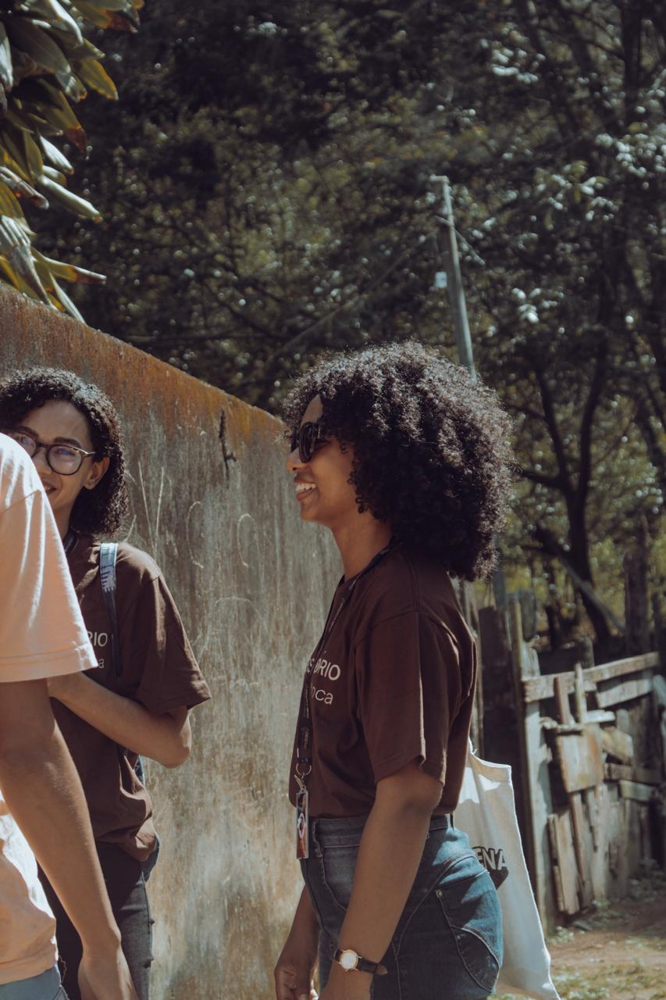
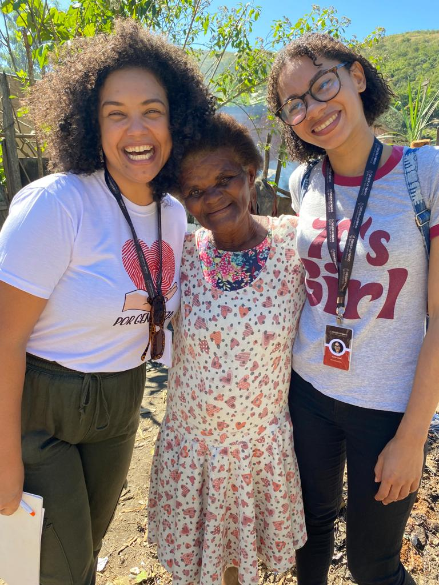

De Justiça Sociambiental de Olho em Itaoca
O Observatório De Olho em Itaoca é uma iniciativa do Espaço Gaia,
construída a partir da geração cidadã de dados, com foco na escuta
e no protagonismo dos moradores do entorno do antigo lixão de Itaoca.
Atua com mapeamento de violações, formação política, educação popular,
articulação em rede por justiça socioambiental e construção de um bem viver.
O observatório é conduzido por mulheres que constroem e vivenciam a comunidade e também pela equipe do Espaço Gaia, garantindo co-protagonismo na concepção, execução e análise dos dados.

Pesquisas de campo e monitoramento participativo com base na realidade do território.
Mapeamos violações e desigualdades para evidenciar problemas e produzir conhecimento.
Fortalecemos lideranças, promovemos educação popular e ampliamos o protagonismo comunitário.
Articulamos redes, incidimos em políticas públicas e lutamos por direitos e reparação histórica.
Pesquisa de campo e geração de dados em 42 casas e o início da construção do relatório de monitoramento
Aplicação da pesquisa
Lançamos o relatório de monitoramento
Começamos a pesquisa sobre trabalho de cuidado e racismo ambiental com a OSC La Poderosa
Começamos a produção da agenda 2030 CPX do Salgueiro e lançamos no dia 30/06 deste ano
Impacto de pesquisa
Relatório de monitoramento
Dados produzidos com participação comunitária
Ações, formações e audiências realizadas
A produção de dados no observatório não se encerra nos relatórios: ela volta para o território em formatos acessíveis e dialógicos. Por meio de rodas de conversa, materiais visuais, redes sociais e vídeos curtos, construímos coletivamente o entendimento das injustiças vividas e das possibilidades de transformação.
O Observatório é uma tecnologia social replicável, criada a partir da escuta ativa, da geração cidadã de dados e da valorização dos saberes locais.
O Observatório atua diretamente na formação política de lideranças comunitárias, reconhecendo e fortalecendo mulheres e jovens que já mobilizam o território nas lutas por água, moradia, saúde e dignidade. O saber da experiência, aliado à troca com outros agentes, transforma essas moradoras em multiplicadoras de direitos e cuidado coletivo.

A atuação tem ganhado visibilidade em reportagens, publicações digitais, fóruns de justiça climática e espaços de debate sobre políticas públicas e direitos humanos. Utilizamos as redes sociais como ferramenta de mobilização e devolutiva de dados, ampliando o alcance das vozes do território. O Relatório de Monitoramento está disponível por QR Code e já foi citado como referência em processos de incidência política e formação popular.
Jornal Colabora
Jornal Le Monde
Relatório de Monitoramento
Agenda 2030
Apoie essa luta por justiça socioambiental e por um futuro mais digno.